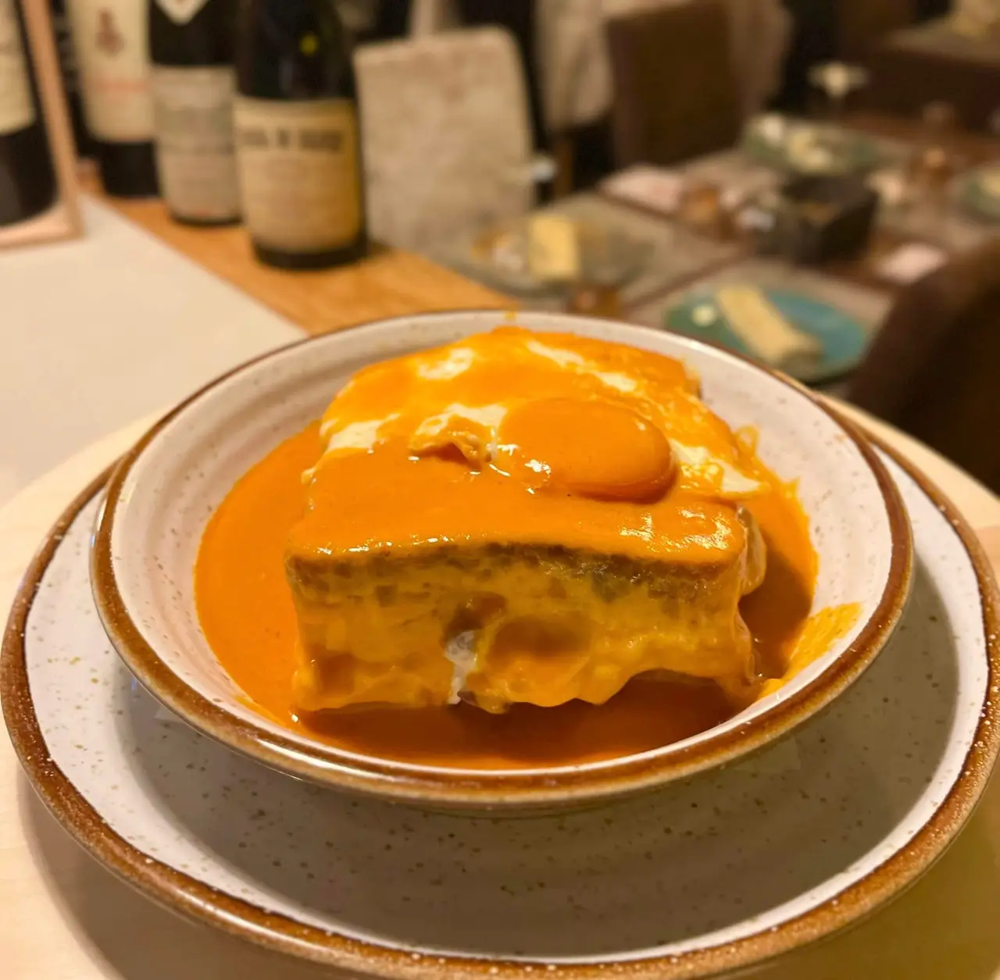
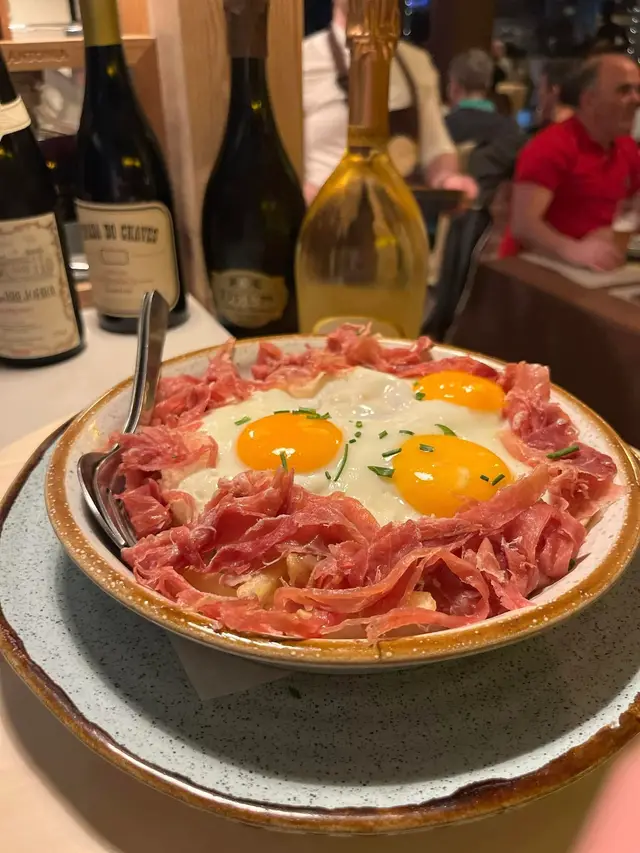
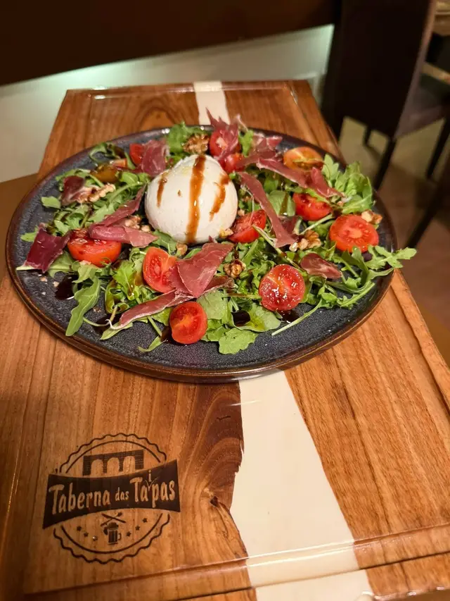
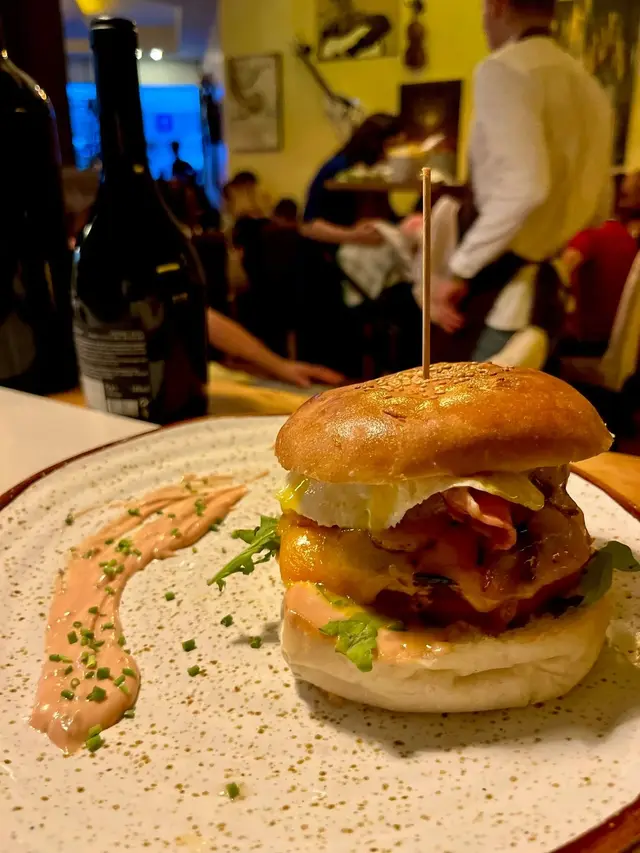
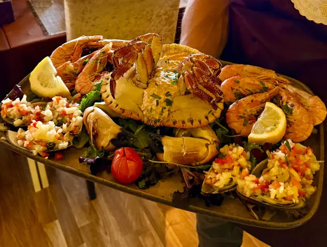
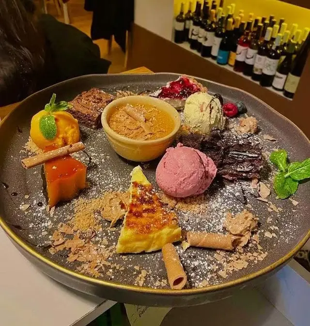
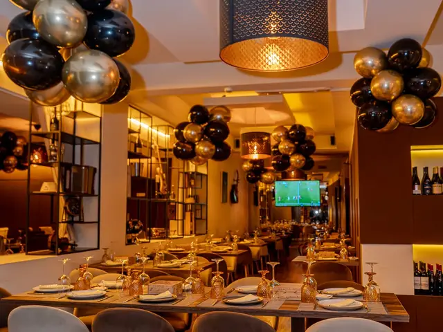
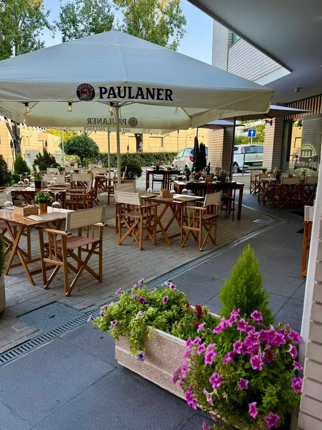
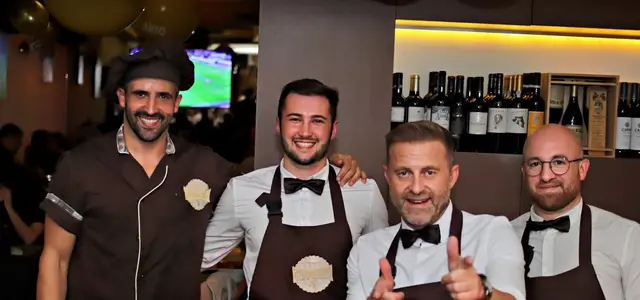

Taberna das Taipas
Tapas e petiscos ibéricos para partilhar ao centro da mesa, em Caldas das Taipas.
Petiscos ao centro da mesa
A fartura de uma tasca minhota com o ritmo de um gastrobar: pede-se um pouco de tudo, põe-se ao meio e cada um tira. Francesinhas, ovos rotos, mariscos e sangrias de espumante, desde 2015 (por confirmar).
Os pratos da casa
Os de assinatura, com o preço da ementa.
-
Francesinha (lombo de boi) especial à taberna
12,40 € · meia francesinha 9,90 €
-

Ovos rotos com presunto
9,90 €
-

Burrata de búfala
azeite trufado, presunto, rúcula e nozes · 9,90 €
-

Hambúrguer artesanal
Black Angus, à taberna · 10,90 €
-

Misto de mariscos
sapateira recheada, camarão cozido, mexilhão ao vinagrete · 39,90 €
-

Sobremesas
mudam com a época · a partir de 4,90 €
Também da casa
- Fondue de queijo brie7,90 €
- Camarão selvagem flambé em whisky11,40 €
- Sangria de espumante16,90 €
- Francesinha vegetariana (por confirmar)11,90 €

Mesa para o grupo todo
A ementa foi feita para partilhar: aniversários, jantares de empresa, os amigos à sexta. As mesas são de madeira e juntam-se para grupos grandes.
- Grupos grandes e eventos privados: ligue com antecedência para combinar menu e espaço.
- Esplanada coberta, com animais de estimação bem-vindos lá fora.
- Música ao vivo ou DJ em algumas noites. (por confirmar)
- Entrada sem degraus e casa de banho adaptada. (por confirmar)
- Take-away por telefone e entregas pela Glovo. (por confirmar)
Onde e quando
No rés-do-chão, com esplanada coberta à frente.
Horário (por confirmar)
- Segunda a sábado
- 18:00–00:00
- Domingo
- 12:00–15:00 e 17:00–22:30
Cozinha a partir das 19:00 (por confirmar) durante a semana. Férias anuais anunciadas no Instagram e no Facebook.
Morada
Rua Professor Manuel José Pereira, 630 R/C4805-128 Caldas das Taipas, Guimarães
A 200 m (por confirmar) da Escola Secundária de Caldas das Taipas.
Abrir no Google MapsTelefone (números por confirmar)
Reservas por telefone ou pelo TheFork. Não há reservas por WhatsApp nem por email.

Das Taipas, para as Taipas
A Taberna abriu em outubro de 2015 (por confirmar) pela mão de Miguel Pereira (por confirmar), depois de mais de vinte anos (por confirmar) em hotelaria e restauração.
Na vila havia bons restaurantes de prato cheio, mas faltava um sítio descontraído para petiscar e partilhar ao meio da mesa. O nome é uma homenagem às Caldas das Taipas.
As receitas juntam a tradição minhota e ibérica (a alheira de caça com grelos, os ovos rotos, as zamburinhas à la plancha) com ideias da casa, como o fondue de brie com frutos do bosque e o camarão flambé em whisky. E o molho de francesinha, claro.
